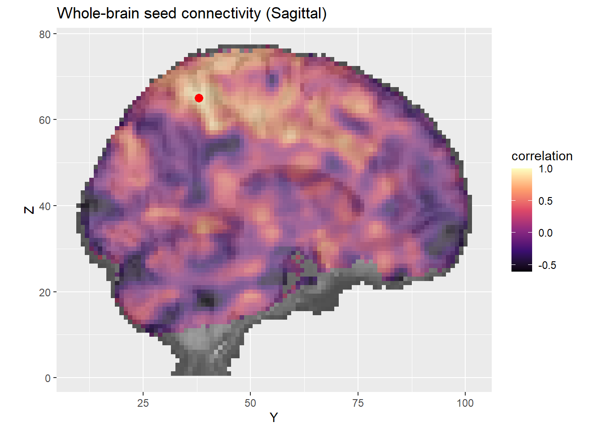

source(here("source", "HW_1_data_download.R"))BIOS 731 Homework 1: A simple seed-based analysis of functional connectivity in a single subject
Overview
This analysis aims to investigate the functional connectivity of the brain during an LSD experience of a single subject at rest. Specifically, we perform a seed based connectivity analysis with the seed in the precuneus, a key hub of the default mode network (Utevsky, Smith, and Huettel (2014)). The default mode network is a brain network particularly active during the resting state (Raichle et al. (2001)).
Data Description
The data contain the Blood-Oxygen-Level-Dependent (BOLD) time series at each brain voxel for the subject during the scan as well as the T1 weighted anatomical image.
The pre-processed fMRI data were accessed and downloaded from OpenNeuro.org (Carhart-Harris (2020) et al.). To make the size of the data smaller, brain volumes 50 through 100 were extracted from the original data. The data download from the GitHub repository contains this shrunken data.
R package RNifti (Clayden, Cox, and Jenkinson (2026)) was used to read in image files. A brain mask i.e. the voxels which contain brain tissue was specified by selecting only voxels which had anatomical T1-weighted intensity greater than 0.
Analysis
We performed a seed-based connectivity analysis (Hampson et al. (2002)). The seed voxel was selected roughly in the precuneus region of the cortex.
Pearson’s correlation coefficient was then calculated pairwise between the BOLD time series of the seed voxel and all other voxels in the brain mask.
Data Download
This script loads the anatomical image and the functional images into the R environment using R package RNifti.
Data Analysis
This code also contains necessary data processing as well as analysis including the creation of the brain mask, the selection of the seed voxel, the calculation of correlations across voxels and the sorting of voxels for visualization.
source(here("source", "HW_1_data_analysis.R"))Visualization
source(here("source", "visualization_functions.R"))
source(here("source", "HW_1_data_visualization.R"))



Results
Figure 1 shows highest correlation with neighboring voxels which is consistent with previous work on structural and functional connectivity (Koch, Norris, and Hund-Georgiadis (2002)). Areas which are highly structurally connected like immediate neighboring voxels are likely to show high levels of functional connectivity (van den Heuvel and Hulshoff Pol (2010)).
The sagittal slice shown in Figure 1 shows generally low connectivity with the medial prefrontal cortex, another key hub of the default mode network (Zhou and Becker (2025)). This is consistent with other literature showing DMN modulation as a key effect of psychedelics use on brain connectivity. (Gattuso et al. (2022))
Figure 2 shows similar BOLD intensities across the most-correlated voxels. Nearly all voxels displayed on this plot were near neighbors to the seed voxel.
References
Carhart-Harris, Robin. 2020. “"Neural Correlates of the LSD Experience Revealed by Multimodal Neuroimaging".” OpenNeuro. https://doi.org/10.18112/openneuro.ds003059.v1.0.0.
Clayden, Jon, Bob Cox, and Mark Jenkinson. 2026. RNifti: Fast r and c++ Access to NIfTI Images. https://doi.org/10.32614/CRAN.package.RNifti.
Gattuso, James J, Daniel Perkins, Simon Ruffell, Andrew J Lawrence, Daniel Hoyer, Laura H Jacobson, Christopher Timmermann, et al. 2022. “Default Mode Network Modulation by Psychedelics: A Systematic Review.” International Journal of Neuropsychopharmacology 26 (3): 155–88. https://doi.org/10.1093/ijnp/pyac074.
Hampson, Michelle, Bradley S. Peterson, Pawel Skudlarski, James C. Gatenby, and John C. Gore. 2002. “Detection of Functional Connectivity Using Temporal Correlations in MR Images.” Human Brain Mapping 15 (4): 247–62. https://doi.org/https://doi.org/10.1002/hbm.10022.
Koch, Martin A., David G. Norris, and Margret Hund-Georgiadis. 2002. “An Investigation of Functional and Anatomical Connectivity Using Magnetic Resonance Imaging.” NeuroImage 16 (1): 241–50. https://doi.org/https://doi.org/10.1006/nimg.2001.1052.
Raichle, Marcus E., Ann Mary MacLeod, Abraham Z. Snyder, William J. Powers, Debra A. Gusnard, and Gordon L. Shulman. 2001. “A Default Mode of Brain Function.” Proceedings of the National Academy of Sciences 98 (2): 676–82. https://doi.org/10.1073/pnas.98.2.676.
Utevsky, Amanda V., David V. Smith, and Scott A. Huettel. 2014. “Precuneus Is a Functional Core of the Default-Mode Network.” Journal of Neuroscience 34 (3): 932–40. https://doi.org/10.1523/JNEUROSCI.4227-13.2014.
van den Heuvel, Martijn P., and Hilleke E. Hulshoff Pol. 2010. “Exploring the Brain Network: A Review on Resting-State fMRI Functional Connectivity.” European Neuropsychopharmacology 20 (8): 519–34. https://doi.org/https://doi.org/10.1016/j.euroneuro.2010.03.008.
Zhou, Feng, and Benjamin Becker. 2025. “The Default Mode Network and Emotion — Dual Roles of the Medial Prefrontal Cortex in Emotional Experience and Regulation.” Current Opinion in Behavioral Sciences 66: 101613. https://doi.org/https://doi.org/10.1016/j.cobeha.2025.101613.